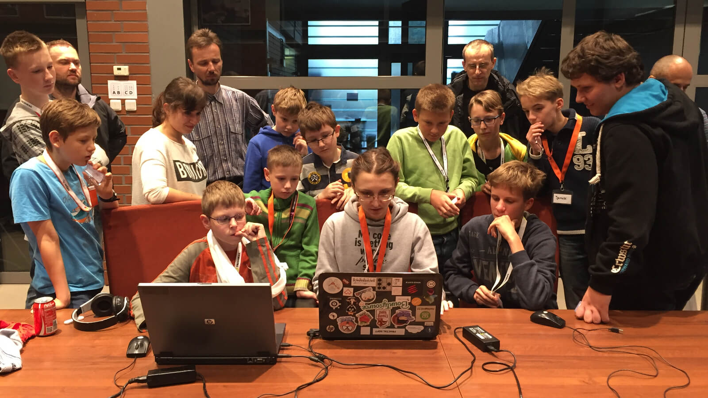
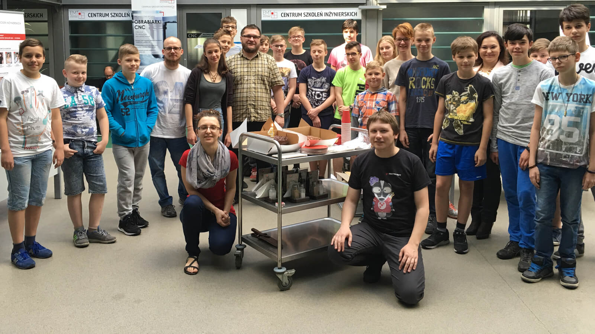
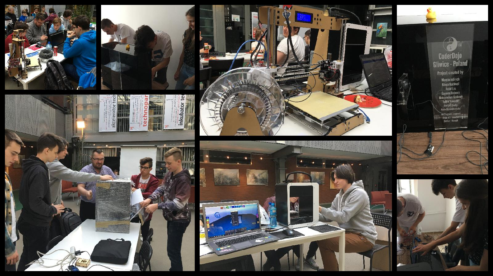

Crazy ideas at CoderDojo
Case Study
Alek Malaszkiewicz at Fractal Soft & CoderDojo Gliwice
Gliwice
This is not
our CoderDojo Gliwice
This is part of
our CoderDojo Gliwice
CoderDojo in numbers
- years: 6 (September 2013 - March 2014 - March 2019)
- mentors: 4 (Agnieszka, Grzesiek, Darek, Alek)
- all mentors: 6~10
- ninja: 17
- all ninja 2018/2019: 28
- all ninja: ~120 (2015-2019: 83)
- meetings: ~150 (2017-2019: 30)
Meetings 2018/2019
Before Year 2015

September 2013
Year 2015
Year 2015
CoderDojo Gliwice - Regular meetingsYear 2016
Year 2016
CoderDojo Gliwice - Regular meetingsYear 2017
Year 2017
CoderDojo Gliwice - Regular meetingsYear 2017
CoderDojo BirthdayYear 2017
Coolest Project - PreparationYear 2017
Coolest Project - Flight to DublinYear 2018
Year 2018
 CoderDojo Birthday
CoderDojo Birthday
Year 2018
 Coolest Project - PreparationYear 2018
CoderDojo Gliwice - Regular meetingsYear 2019
Year 2019
 CoderDojo Gliwice - Regular meetings
CoderDojo Gliwice - Regular meetings
Workshops
Top Secret
Thank you
- Fractal Soft page: fractalsoft.org
- Fractal Soft blog: blog.fractalsoft.org
- Home page: torrocus.com